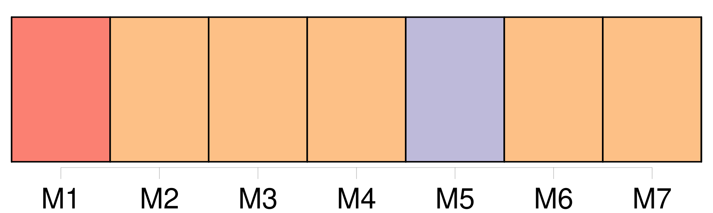
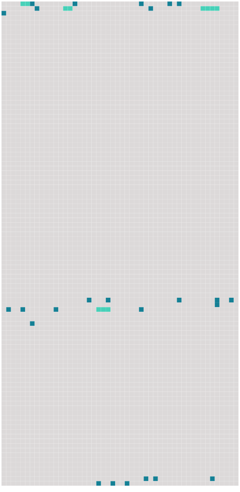

Longueur nb maillons : 29 mentions |
 |
Elle discutait violemment avec [un homme] [qui] portait un sac sur l'épaule, et [qui] voulait lui payer ses carottes un sou la botte. — Tenez, [vous] n'êtes pas raisonnable, [Lacaille] …… [Vous] les revendez quatre à cinq sous aux Parisiens, ne dites pas non ……
À deux sous, si [vous] voulez.
Et, comme [l'homme] s'en allait : [Il] peut en chercher, des carottes à un sou, [cet ivrogne de Lacaille] ……
Vous verrez qu' [il] reviendra. [132 phrases]
Il lui restait quelques bottes de carottes, quand [Lacaille] reparut, avec [son] sac. [1 phrases]
dit [-il] — J'étais bien sûre de [vous] revoir, [vous] , répondit tranquillement la maraîchère. [6 phrases]
Lorsque [Lacaille] se fut éloigné, avec [ses] carottes dans [son] sac : [Ce vieux -là] râle sur tout le marché ; [il] attend quelquefois le dernier coup de cloche, pour acheter quatre sous de marchandise …… [6 phrases] Quand [Lacaille] s'en était allé, il avait aperçu une carotte par terre. [88 phrases] Florent reconnut [Lacaille] , [dont] le sac, à cette heure, débordait de légumes. [Il] en était à la troisième tournée, avec un camarade, qui racontait longuement l'achat d'un panier de pommes de terre.
Quand [il] eut vidé [son] verre, [il] alla causer avec monsieur Lebigre, dans un petit cabinet vitré, au fond, où le gaz n'était pas allumé. |
 |
Il est possible de télécharger la ressource sur la page Ortolang |
Si vous avez des questions ou vous voyez des erreurs, merci d'envoyer un mail à silvia.federzoni89@gmail.com |